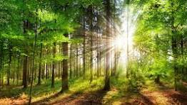

Rivers are natural waterways that start small and grow as they collect water from streams and rainfall. They flow downhill, shaping land and providing water for plants, animals, and people. Major rivers like the Amazon and Nile are crucial for ecosystems and human activities. However, rivers face problems like pollution and changes from human actions. Conservation efforts focus on keeping rivers healthy for everyone and everything that depends on them.
Mountains are tall landforms shaped by Earth's forces like plates colliding and volcanoes erupting. They vary in types and features, from high peaks to glaciers and unique wildlife. Mountains are important for water, climate, and tourism, with famous ranges like the Himalayas and Rockies. They also face threats like human impact and climate change, so conservation is crucial for protecting their beauty and ecosystems.
Forests are big areas with lots of trees and plants, like tropical, temperate, and cold forests. They're super important because they have tons of different plants and animals, make oxygen, control climate, and give us things like wood and medicine. But they're in danger from things like cutting down trees and climate change. We can help by protecting forests, using them sustainably, and working with local communities. Famous forests include the Amazon and big forests up north, showing how vital they are for nature and people
Volcanoes are openings in Earth's crust that release molten rock, ash, and gases. They come in different types like shield, stratovolcanoes, and cinder cones, each with unique shapes and eruption styles. Volcanoes form from magma rising from Earth's mantle and can pose various hazards like lava flows, ashfall, and pyroclastic flows. They create diverse landforms like calderas and lava plateaus and are monitored by scientists to predict eruptions and protect people.